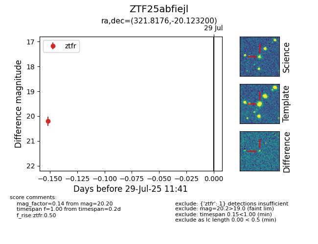

Target ZTF25abfiejl at 2025-07-29 11:41, see:
FINK: fink-portal.org/ZTF25abfiejl
Lasair: lasair-ztf.lsst.ac.uk/objects/ZTF25abfiejl
ALeRCE: alerce.online/object/ZTF25abfiejl
alt names
ZTF25abfiejl (ztf,fink)
coordinates:
equatorial (ra, dec) = (321.8176,-20.12320)
galactic (l, b) = (30.0315,-43.02355)
photometry
last ztfr=20.20
1 ztfr detections
